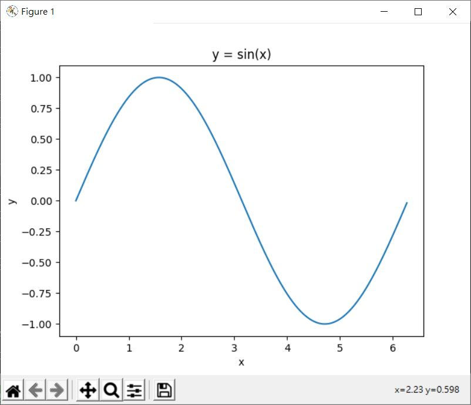
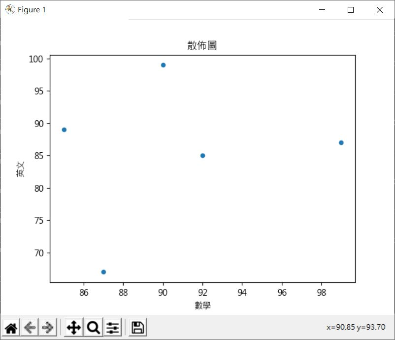
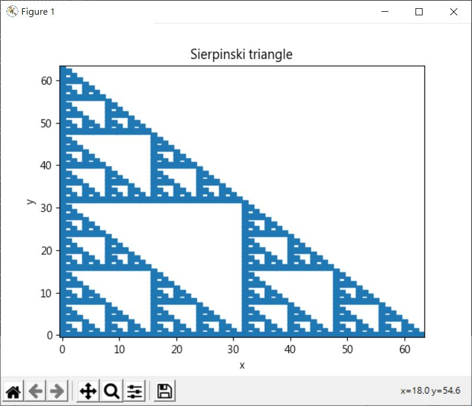
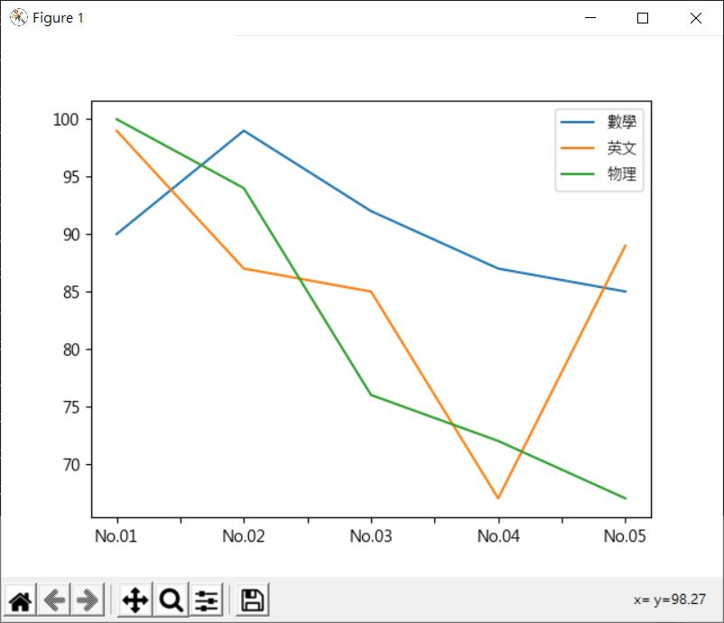

使用 Pandas 組織資料時，若想要繪圖，可以直接使用 Matplotlib，這可以掌握許多繪圖細節，然而對於簡單的繪圖需求，可以直接透過 Pandas 對 Matplotlib 的整合，例如〈NumPy 與 Matplotlib〉中的 sin 繪圖，使用 Pandas 的繪圖整合的話，可以如下撰寫：
import numpy as np
import matplotlib.pyplot as plt
import pandas as pd
x = np.arange(0, 2 * np.pi, np.pi / 180) # 0 到 2 * PI，步進值 PI / 180
y = np.sin(x)
sin = pd.Series(y, index = x)
sin.plot(title = 'y = sin(x)', xlabel = 'x', ylabel = 'y')
plt.show()
繪製出來的圖案如下：

如果要畫散佈圖的話，必須使用 DataFrame，呼叫 plot 時指定 kind 為 'scatter'，並指定 x 與 y 來自哪一行，例如：
import matplotlib.pyplot as plt
import pandas as pd
scores = pd.DataFrame(
[
[90, 99, 100],
[99, 87, 94],
[92, 85, 76],
[87, 67, 72],
[85, 89, 67]
],
columns = ['數學', '英文', '物理']
)
scores.plot(kind = 'scatter', x = '數學', y = '英文')
plt.show()
這會顯示以下的圖案：

因此，對於〈NumPy 陣列資料型態〉中的謝爾賓斯基三角形，可以使用以下的程式：
import numpy as np
import matplotlib.pyplot as plt
import pandas as pd
def sierpinski(n):
def quotientAndRemainderZero(elem, n):
quotient = elem // n
remainder = elem % n
return quotient & remainder == 0
quotientAndRemainderZero = np.frompyfunc(quotientAndRemainderZero, 2, 1)
nums = np.arange(n ** 2)
nums = nums[np.where(quotientAndRemainderZero(nums, n))]
return (nums % n, nums // n)
n = 64
x, y = sierpinski(n)
plotwidth = 6
axislim = (-0.5, n - 0.5)
plotsize = (plotwidth, plotwidth)
PTS_PER_INCH = 72
plotwidth_pts = PTS_PER_INCH * plotwidth
markersize = 0.775 * plotwidth_pts / n
tri = pd.DataFrame(np.array([x, y]).T)
tri.plot(
title = 'Sierpinski triangle',
kind = 'scatter',
x = 0,
y = 1,
xlabel = 'x',
ylabel = 'y',
xlim = axislim,
ylim = axislim,
# Matplotlib 的 plot.scatter 方法需要的參數
marker = 's',
s = markersize ** 2
)
plt.show()
原本 Matplotlib 的 plot.scatter 方法需要的參數，可以附加在 DataFrame 的 plot 方法上，它們會轉給 Matplotlib 的 plot.scatter 方法，繪製出來的圖案如下：

在最簡單的情境下，什麼都不用設，就會有預設的圖例、著色等，例如：
import matplotlib.pyplot as plt
import pandas as pd
scores = pd.DataFrame(
[
[90, 99, 100],
[99, 87, 94],
[92, 85, 76],
[87, 67, 72],
[85, 89, 67]
],
columns = ['數學', '英文', '物理'],
index = ['No.01', 'No.02', 'No.03', 'No.04', 'No.05']
)
scores.plot()
plt.show()
這會呈現出以下的圖案：

如果使用 Pandas，對於簡單的圖案，可以試著直接使用整合的繪圖功能，若需要設定的細節變多，或者是整合的繪圖功能無法直接滿足時，再試著直接設定 Matplotlib。